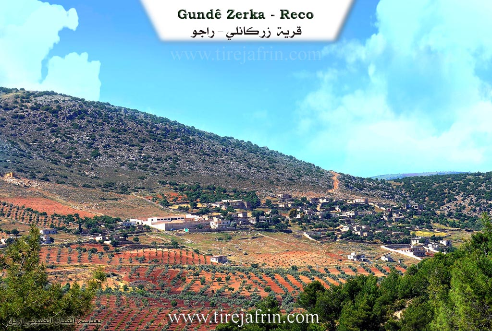
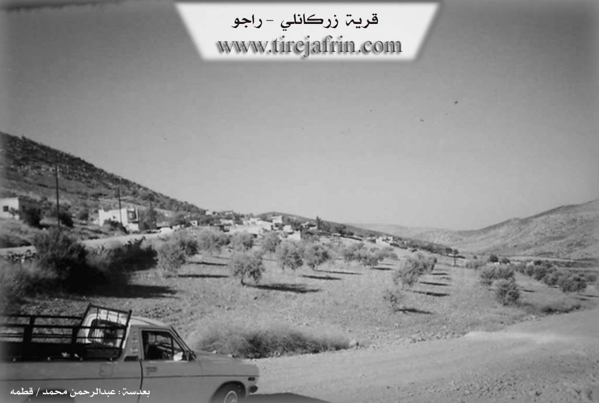

General Information
Nahiya (Subdistrict)
Reco
Also Known As
Zarka, Zarkanli, Zerka, Zerku, الطلة, المطلة, المطلة، الزرقا, زركانلي, زاركو
Tribes
Zerkê
Families, Clans, etc.
Abu Idrîs, Hemê Xêlet, Jîrî, Mala Mamû Mehmûd Îsê, Mala Mihemedî Têwed, Mala Mihê, Mala Têwed, Mala Şêxê Xelûzê, Xelûzê

Photos


Basic Information about Zerka
Source: Ax û Welat
Foundation Date/Period: 300 to 400 years ago
Caves: Şikefta Bîlal
Hills: Çiyayê Bîlalê Hebeş, Çiyayê Hawarê
Shrines: Bîlalê Hebeş, Şikefta Bîlal
Ruins: Xaniya Bêdera
Wells: Bîra Çûbana
Other Landmarks: Geliye Cirqa
Source: Afrin 366
Etymology: Derived from the village of Zirîka in the north, from where the founders migrated
Foundation Date/Period: Approximately 300 years ago
Other Landmarks: Deşta Mîkêtina
Summaries
I. Summary from TirejAfrin Site (English) of Zerka
Source: https://www.tirejafrin.com/site/kura%20afrin%20%20%20Reco%20-%20zerka.htm
The following is stated in the book جبل الكرد (عفرين) دراسة جغرافية Çiyayê Kurmênc (Efrîn): A Geographical Study by د. محمد عبدو علي Dr. Mihemed Ebdo Elî:
Zerkê, Zirkanlî, El-Telê / El-Mutilê.
Population: 792. Area: 131 hectares. Distance: 15 km. Altitude: 740 m.
Zerkê: The name of a Kurdish tribe, members of which are found around Bedlîs. They possessed an emirate called Zirakî Zirîkî Zirqî in Mêrdîn. This emirate was established by Şêx Hesen who came from Syria, and four ruling families emerged from his lineage. One of them was called Derzînî, and it is said that they have a connection to the Druze religion and its founder Ismail al-Darzi, and that he was born in the emirate. That family ruled during the Ottoman era.
It is a small village located on the eastern slope of Çiyayê Bilal.
The following is stated in the book عفرين .... نهرها وروابيها الخضراء Efrîn... Her River and Her Green Hills by the writer عبدالرحمن محمد Ebdulrehman Mihemed from the village of Qetme:
Zirkanlî: A village in Çiyayê Kurmênc following the Reco district, Efrîn region, Heleb governorate. It is a small village located in the middle section of the mentioned mountain, on the eastern slope of a limestone height. It is 15 km away from the town of Reco towards the northeast. It overlooks agricultural lands to the east and south which slope towards the southeast, and oak forests are spread over the mountain slopes. Its soil is alluvial.
It is bordered to the north by a very high and rugged mountain range and the village of Elemdar and the village of Gûrzêl, to the south by a slope and plain and the village of Çetalkew, to the east by a mountain range and watercourse and the village of Gêlanlî, and to the west by a mountain range and the village of Çobanlî.
The number of its houses reaches about 40 houses, and its age is about 300 years according to the account of one of the elders in the village. Its old dwellings are made of stone and mud with wooden ceilings, and the modern ones are cement and extend on its outskirts. An electricity network is available, as well as a prefab primary school and an unpaved dirt road.
The residents work in rain fed agriculture (olives, grains, legumes, vines) on an area of 131 hectares, and they raise sheep and goats. A section of the residents works in the industry of making charcoal from oak trees. The village drinks from rainwater which is collected in cisterns dug in front of the houses, and currently they have begun drilling artesian wells within the courtyards of the houses. There is also an ancient water well from the Roman era in the western side of the village.
Among the social figures are the engineer Kemal (Ebû Mîrvan).
Mukhtar of the village: Mr. Ebdo Ehmed Mihemed.
Sources
Book: جبل الكرد (عفرين) دراسة جغرافية Çiyayê Kurmênc (Efrîn): A Geographical Study by د. محمد عبدو علي Dr. Mihemed Ebdo Elî.
Book: عفرين .... نهرها وروابيها الخضراء Efrîn... Her River and Her Green Hills by عبدالرحمن محمد Ebdulrehman Mihemed from the village of Qetme.
Preparation and execution:
Manager of Tirej Efrîn website: Ebdulrehman Hacî Osman
20/12/2013
II. Summary of Zerka from Ax û Welat
Source: https://www.youtube.com/watch?v=4pBA9djRct4
The village of Zerka, located in the Raco district of the Afrin region, is situated high upon the slopes of Çiyayê Bîlalê Hebeş. Local elders and historical estimates place the founding of the village between 300 and 400 years ago. The oral history of the village identifies the first settlers as Mala Mamû Mehmûd Îsê. Following this founding lineage, three other families arrived to populate the settlement: Mala Têwed, Mala Şêxê Xelûzê, and Mala Mihê. Some accounts suggest that these residents originally moved from a nearby location known as Xaniya Bêdera, situated in the valley of Geliye Cirqa.
The geography and spiritual life of Zerka are deeply connected to Çiyayê Bîlalê Hebeş. The mountain serves as a significant religious site due to the Şikefta Bîlal (Cave of Bilal), a shrine located near the summit. Local legend claims a connection to Bîlalê Hebeş, and the site has long been treated as a ziyaret (shrine). Historically, during times of drought, villagers would climb to the cave to offer sacrifices and pray for rain. A unique tradition involved pressing small stones against the cave walls; if the stone stuck to the surface, it was believed that the supplicant’s wish—whether for academic success or other desires—would be granted.
Daily life in Zerka was historically defined by the struggle for water. Before modern infrastructure, the village relied on a shared ancient well named Bîra Çûbana. This well, which reportedly never went dry, sustained not only Zerka but also the neighboring villages of Çûbana, Kêla, Gundê Qasim, and Kerrê. Residents would travel with animals to draw water using wooden pulleys, making the well a central hub for social interaction among the distinct communities.
The village economy is rooted in agriculture, specifically olive groves and vineyards, which are carved into the difficult mountain terrain. Farmers cultivate the Hevidî grape variety (also known as Zehlawî), which is renowned in the area. The village also has a history of skilled craftsmanship and education. A notable resident, Apê Henan, preserved the art of carpentry, crafting agricultural tools and tembûr instruments by hand. Furthermore, the village served as an educational center for the immediate region; the Mala Mihemedî Têwed family is credited with funding and constructing the local school, which educated children from Zerka as well as nearby Alemdarê and Kêla.
II. Summary of Zerka from Afrin 366
Source: https://www.youtube.com/watch?v=QbLd6m0cQJw
The village of Zarka, located in the Efrîn region, holds a history that stretches back approximately three centuries. According to the village elder, Xelû, the settlement was established by migrants from a place called Zirîka, located to the north in what was then Ottoman territory. The name Zarka itself is a derivation of Zirîka, serving as a linguistic tether to the founders' origins. When these original settlers arrived, fleeing difficult conditions or persecution, they found the area largely uninhabited. At that time, there was only a single household present, known as Mala Jîrî. Over time, other groups arrived, including the lineage associated with Hemê Xêlet and the ancestors of the current prominent family, Mala Xelûzê, named after their forefather Xelîl (or Xelûz).
The village is situated in a visually striking landscape defined by agriculture and natural beauty. It overlooks the Deşta Mîkêtina, a plain noted for its water resources. The economy and daily life of Zarka are deeply rooted in the cultivation of the land. The documentary highlights the abundance of simaq (sumac), which covers the ground in some areas, as well as extensive orchards of zeytûn (olives), hêjîr (figs), hinar (pomegranates), and kerez (stone fruits/cherries). Xelû notes that in the past, the villagers relied more heavily on livestock, but over the last few decades, the focus shifted almost entirely to arboriculture, specifically olive and vine cultivation.
Architecturally and socially, Zarka preserves traces of its development over the 20th century. A school was established in the village as early as the 1950s, which served students up to the sixth grade before they would have to travel to Racû or Efrîn for further education. The village is surrounded by a network of other settlements, maintaining visual and social ties with neighbors such as Bela (or Bêla), Aşûnê (also referred to as Eşwînê), Dîkê, Zivinga Gelî, Çê, and Qêsim. The elders distinguish between different localities with similar names, such as Kerzêlê Çê versus Kerzêlê Cûmê.
The narrative of Zarka is also one of migration and resilience. Xelû, aged 76, recounts a life that transitioned from local trade in Heleb back to the village. He speaks passionately to the diaspora in Ewrûpa, urging them not to forget their history. He calls upon Kurds living abroad in places like Kanada, Brîtanya, and Amerîka to purchase homes and land back in Efrîn to ensure their heritage is not lost. The village remains a testament to this enduring attachment to the soil, symbolized by an ancient walnut tree planted by Xelû's grandfather over 155 years ago.
Transcriptions and Subtitles
| Source | Video | Subtitles | Transcript |
|---|---|---|---|
| Afrin 366 1 | Watch Video | Download SRT | View Transcript |
| Ax û Welat 1 | Watch Video | Download SRT | View Transcript |
Foundation/Origin Information of Zerka
Founded by four primary families—those of Mehmûdê Ezîzê, Mela Teyo, Mela Şêxê Xelûsî, and Mela Mehe—who transformed the once-forested mountain into agricultural land for olives, grapes, and almonds.
Source: Ax û Walat Transcript
The current village was established by the family of Mehmûdê Xelûzê, beginning as a small community of just seven households.
Source: Afrin 366 Transcript
The current village was established by the family of Mehmûdê Xelûzê, beginning as a small community of just seven households.
Source: Afrin 366 Transcript
Possible Village Name Meaning of Zerka
Name of a Kurdish tribe found around Bidlis. They had an emirate called "Zaraki – Zariki- Zarqi" in Mardin. This emirate was founded by Sheikh Hasan who came from Syria.
Source: TirejAfrin Site
Derives its name from an older, now-abandoned settlement to the north called Zirîko.
Source: Afrin 366 Transcript
Derives its name from an older, now-abandoned settlement to the north called Zirîko.
Source: Afrin 366 Transcript
V. Links
- Tirej Afrin:
https://www.tirejafrin.com/site/kura%20afrin%20%20%20Reco%20-%20zerka.htm - Link:
https://www.welateme.net/erebi/modules.php?name=News&file=print&sid=22507 - Ax û Welat:
https://www.youtube.com/watch?v=B6N9quZ26S4 - Link:
https://www.youtube.com/watch?v=4pBA9djRct4 - Afrin 366:
https://www.youtube.com/watch?v=QbLd6m0cQJw